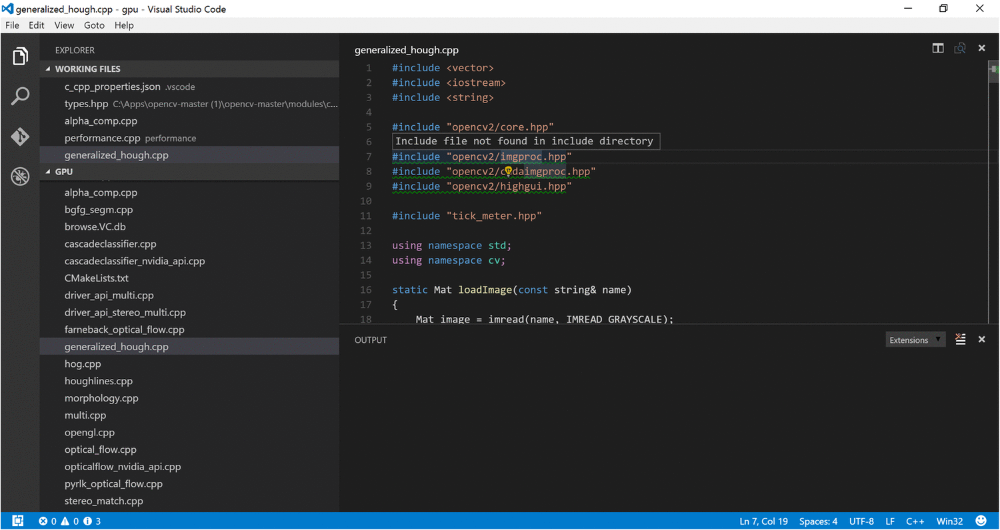
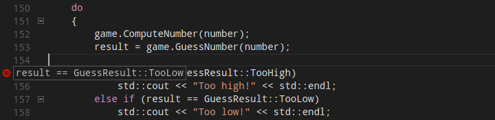

今日VS Code を使用して Windows, Linux Mac でクロスプラットフォーム C/C++ 開発ができるように、プレビューの状態でサポート環境を提供しています。このリリースプレビューで Linux, Mac, Window 上でのデバッグなど、コード編集とナビゲーションのサポートを中心に取り上げています。
もし、軽量なツールで C++ を編集したいときには VS Code は最適です。ですが、既存の Visual C++ プロジェクトや Windows でのデバッグに最適な環境を実現するには、 Visual Studio Community を使用することをお勧めします。
まだ VS Code の C++ はプレビュー状態ですので、今こそバグレポート, 機能リクエスト, フィードバックするときです。LinuxやMacを開発環境として使用している人のために、Visual Studio チームとget engagedしてください。
(編集メモ:get engaged : 婚約, 言い交わす
Getting Started
Microsoft C/C++ 拡張機能をインストール:
- VS Code を開く
- 拡張機能ビューを開く
cpptoolsを検索- Install して Enable にする
- C/C++ のコードフォルダを開く
コード補完とナビゲーションを有効にするには、c_cpp_properties.json を作成する必要があります:
- ソースファイル内の緑破線(e.g. #include文)にカーソルを合わせる
- カーソル下に表示される電球をクリック
- Add include path to settings をクリック
これにより c_cpp_properties.json を生成します。このファイルを使用することで、 include パスを追加して、コードナビゲーションと自動補完を有効にできます。
Note:
c_cpp_properties.jsonは コマンドパレット(⇧⌘P (Windows, Linux Ctrl+Shift+P)からC/Cpp: Edit Configurationsを実行することでも、生成したり編集可能です。
VS Code からアプリケーションをビルドするには。 tasks.json を作成する必要があります:
- コマンドパレット (⇧⌘P (Windows, Linux Ctrl+Shift+P)) を開く
- Tasks: Configure Task Runner コマンドを実行して、task テンプレートのリストを表示し
- 外部コマンドを実行するタスクを作成するので Others を選択
commandをアプリケーション構築に使用するコマンドライン式(e.g.g++ -g main.cpp)に設定- 必要な args を追加(e.g. デバッグ用にビルドする場合は
-gなど) - これにより(⇧⌘B (Windows, Linux Ctrl+Shift+B)) でアプリケーションをビルドできるようになります
この時点で .vscode フォルダ下の tasks.json は、次のように表示するはずです:
|
タスクの詳細は Integrate with External Tools via Tasks を参照してください。
デバッグを有効にするには、 launch.json を作成する必要があります:
- サイドバーのデバッグアイコンをクリックして、デバッグビューに移動します
- デバッグビュー で、設定アイコンをクリックします
- 環境の選択から
C++ (GDB/LLDB)(GDB, LLDB) またはC++ (Windows)(Visual Studio Windows Debugger) を選択します。これは、2つのlaunch.jsonを作成します:- C++ Launch はデバッグを開始するときにアプリケーションを起動するためのプロパティを定義します。
- C++ Attach はすでに実行中のプロセスにアタッチするためのプロパティを定義します。
programプロパティを、デバッグしているプログラムへのパスに更新します。- デバッグを開始するときにアプリケーションをビルドする場合は、
tasks.jsonで作成したビルドタスクの名前(上記の例で”g++”)を含むpreLaunchTaskプロパティを追加します。
詳細については Configuring launch.json for C/C++ debugging を参照してください。
Windows 上で GDB を使ってデバッグする場合は Windows Debugging on Cygwin/MinGW を参照してください。
コード編集
コード整形
今回使用している C/C++ 拡張機能は、内蔵のclang-formatを使用した整形をサポートします。
ファイル全体を Format Document (⇧⌥F (Windows Shift+Alt+F, Linux Ctrl+Shift+I)) で整形したり、コンテキストメニュー(右クリック)からFormat Selection (⌘K ⌘F (Windows, Linux Ctrl+K Ctrl+F)) で選択範囲を整形したりできます。また次の設定で、自動整形を設定することもできます:
C_Cpp.clang_format_formatOnSave- ファイル保存時のフォーマットeditor.formatOnType- トリガー文字(;)を入力時のフォーマット
既定で clang-format style は、ワークスペース内の .clang-format を使用する “file” に設定されています。つまり .clang-format が見つかれば、書式設定はファイルで指定した設定に従います。そして .clang-format が見つからない場合 C_Cpp.clang_format_fallbackStyle 設定 を代わりとして使用します。現在、既定のフォーマットスタイルは “Visual Studio” です。”Visual Studio” の書式設定を使用すれば、 VS Code と Visual Studio Community の両方において書式に互換性が(確実に)あるということです。
“Visual Studio” clang-formatスタイルは、まだ公式の clang-format スタイルではありませんが、次のような clang-format 設定になります:
|
拡張機能に内包されているバージョンと異なる clang-format を使用する場合は、 C_Cpp.clang_format_path 設定を使用して、 clang-format バイナルのパスを指定します。
Windows の例:
|
Fuzzy Auto-Complete (preview)
(編集メモ: 以後 あいまい自動補完
あいまい自動補完は、拡張タグパーサーによって機能します。提案はコードの意味解析に基づくものではありませんが、この機能は現在提供されている単一ファイル IntelliSense よりも幅広い候補を提供します。
具体的には、 C 言語開発で優れた機能を提供します。
ナビゲーションコード
C/C++ 拡張機能が提供するソースコードナビゲーション機能は、コードベースを理解したり回避(?)したりするための強力なツールです。これら機能は、シンボル情報のオフラインデータベース(browse.VC.db)に格納されたタグによって提供されています。C/C++ 拡張機能をインストールすると、C++ ソースコードを含むフォルダを VS Code が読み込むたびにこのデータベースを作成します。タグパーサーがこの情報を生成している間、プラットフォームインジゲーター(下図のWin32)が赤色にかわり、火炎アイコンの隣に表示します。
プラットフォームインジゲータが通常に戻ったとき、オフラインデータベースにソースコードシンボルがタグ付けされ、ソースコードナビゲーション機能が使用できる状態になります。
シンボルサポートを最適化する追加の Include ディレクトリを指定
VS Code の C/C++ 拡張機能は最適なコード編集を提供するために、コード内で参照される各ヘッダファイルがどこにあるのか教える必要があります。既定で拡張機能は、現在のソースディレクトリ、サブディレクトリおよびプラットフォーム固有の場所を検索します。参照されるヘッダファイルが見つからない場合、 VS Code はそれを各 #include ディレクティブの下に緑破線を表示します。
参照する追加インクルード ディレクトリを指定するには、 緑破線の付いた #include ディレクティブの上にカーソルを置いて、電球をクリックします。これにより c_cpp_properties.json を開きます。このファイルで ‘includePath’ プロパティにディレクトリを追加することで、各プラットフォーム構成に追加の Include ディレクトリを指定できます。

シンボル検索
現在のファイルまたはワークスペース内のシンボルを検索して、コード内を迅速に移動できます。
現在のファイル内のシンボルを検索するには⇧⌘O (Windows, Linux Ctrl+Shift+O)を押して、探すシンボルの名前を入力します。入力時にフィルタリングされる一致リストを表示するので、選択して移動します。
現在のワークスペースでシンボル検索するには、代わりに ⌘T (Windows, Linux Ctrl+T) を押して、シンボルの名前を入力します。リストは、上と同じように表示します。まだ開いていないファイルの一致シンボルへ移動する場合、まずファイルを開きます。

あるいは、コマンドパレットを介してシンボルを検索することができます。Quick Open を使用して現在のファイルを検索するには @ コマンドを実行し、現在のワークスペースを検索するには #コマンドを実行してください。⇧⌘O (Windows, Linux Ctrl+Shift+O) と ⌘T (Windows, Linux Ctrl+T) は
それぞれ上と同じ動作をする ‘@’ と ‘#’ のショートカットです。
定義をここに表示
定義をここに表示を使用することで、シンボルの定義を簡単に確認できます。ピークウィンドウ内に定義を表示するので、現在の場所から離れることなく確認できます。
シンボルの定義を見るには、コード内シンボルの上にcursorを置き ⌥F12 (Windows Alt+F12, Linux Ctrl+Shift+F10) を押します。もしくは、コンテキストメニュー(右クリック)から定義をここに移動でも表示することができます。
現在の C/C++ 拡張機能は、シンボルの使用方法にもとづいて 、競合の定義を見分けるのに役立つようにコード解析しません。これらは、オーバーロード関数,クラスおよびそれらコンストラクタなど、違うコンストラクタで違うシンボル定義をするときに発生します。これらが発生した場合、それぞれの競合する定義をピークウィンドウの右側に表示し、現在選択のソースコードが左側に表示されます。
(編集メモ: 個人的に競合って言葉は悪い意味で使う感じがする
見つけたい定義を見つけるためには、ピークウィンドウを開いて競合する定義リストを参照します。定義に移動するには、目的の定義をダブルクリックするか、ピークウィンドウ左側に表示しているソースコード内の任意の場所をダブルクリックしてください。
定義に移動
定義に移動を使用して、シンボルを定義している場所に素早く移動することもできます。
シンボルの定義に移動するには、コード内のシンボル上にカーソルを置き F12 を押します。また、コンテキストメニュー(右クリック)から定義に移動を選択することもできます。シンボルの定義が1つの場合、その場所に直接移動します。そうでない場合は、競合する定義を前のセクションで説明したように、ピークウィンドウで表示し、移動する定義を選択する必要があります。
デバッグ
Getting Started で明示したように、デバッグ環境を設定したら、このセクションで C/C++ のデバッグの詳細に関する情報を確認します。
VS Code は使用しているOSに応じて、 次の C/C++ デバッガをサポートしています:
- Linux: GDB
- OS X: LLDB or GDB
- Windows: Visual Studio Windows Debugger or GDB (Cygwin or MinGW 使用時)
Cygwin/MinGW 上の GDB による Windows デバッグ
VS Code を使用して Cygwin か MinGW を使用して作成した Windows アプリケーションをデバッグできます。Cygwin または MinGW のデバッグ機能を使用するには、デバッガーパスを起動構成(launch.json)に手動で設定する必要があります。Cygwin か MinGW アプリケーションをデバッグするには、 miDebuggerPath プロパティを追加し、その値を Cygwin か MinGW 環境に対応する gdb.exe の場所に設定してください。
たとえば:
|
Windows 上での Cygwin/MinGW デバッグは、アタッチとデバッグの両方をサポートします。
条件付きブレークポイント
条件付きブレークポイントを使用すると、条件の値が true の場合にのみ特定のコード行で実行を中断することができます。条件付きブレークポイントをセットするには、既存のブレークポイントを右クリックしてブレークポイントの編集を選択します。ピークウィンドウが開くので、デバッグ中にヒット式が true と評価されるように条件を入力してください。

エディタ内で条件付きブレークポイントは、黒色の等号を内部に表示するブレークポイント記号で表示します。またカーソルを重ねることで、設定されている条件を表示します。
関数ブレークポイント
関数ブレークポイントを使用すると、特定のコード行ではなく関数の先頭で実行を中断することができます。設定には、Debugペインでブレークポイントセクションを開き、関数ブレークポイントの追加を選択し、実行を中断する関数の名前を入力します。
式の評価
VS Code は一部コンテキストで式の評価をサポートします:
- Debug パネルの ウォッチ式セクションに式を入力でき、ここではブレークポイントがヒットするたびに評価します。
- デバッグコンソールに式を入力することができます。この式は1回だけ評価します。
- ブレークポイントで停止している間は、コード内で表示される任意の式を評価できます。
ウォッチ式セクションは、デバッグ中のアプリケーションで有効になることに注意してください。変数の値を変更する式は、プログラムの継続時間中にその変数を変更します。
マルチスレッドのデバッグ
VS Code の C/C++ 拡張機能には、マルチスレッドプログラムをデバッグする機能を用意しています。すべてのスレッドとその呼び出しスタックは、Call Stack セクションに表示します。

メモリダンプのデバッグ
VS Code の C/C++ 拡張機能には、メモリダンプをデバッグするための機能もあります。メモリダンプをデバッグするには launch.json を開いて、C++ Launch 設定の coreDumpPath (GDB, LLDB) か dumpPath (Visual Studio Windows Debugger) プロパティに、メモリ ダンプのパスを含む文字列を指定します。これはx64上で、x86プログラムをデバッグしている状態でも機能します。
追加のシンボル
デバッガが使用できるシンボルファイル(e.g.Visual Studio Windows Debugger: .pdb)を、保持した追加のディレクトリがある場合。additionalSOLibSearchPath (GDB, LLDB) もしくは symbolSearchPath ( Visual Studio Windows Debugger) 設定して追加することができます。
たとえば:
|
または
|
ソースファイルの場所
ソースファイルがコンパイル場所にない場合、ソースファイルの場所を変更することができます。これは sourceFileMap セクションに追加した、単純なペア置換によって行います。このリストの最初の一致が使用します。
たとえば:
|
GDB, LLDB, MI コマンド (GDB/LLDB)
C++ (GDB/LLDB) デバッグ環境では、-exec コマンドで直接 GDB, LLDB, MI コマンドをデバッグコンソールから実行できます。しかし、デバッグコンソールで直接コマンドを実行するとテストされず、場合によっては VS Code がクラッシュする可能性があるので注意してください。
その他のデバッグ機能
- 無条件ブレークポイント
- ウォッチ ウィンドウ
- コール スタック
- ステッピング
VSコードによるデバッグの詳細については、debugging in VS Code の入門を参照してください。
既知の制限
シンボルとコードナビゲーション
All platforms:
- 拡張機能は関数本体を解析しないので、関数内で定義したシンボルに対して、定義をここに表示と定義に移動は機能しません。
デバッグ
All platforms:
- コンパイルした場所から現在の場所へのソースファイルマッピングを指定する方法はありません。これは、コンパイルした場所とは別ファイルシステムレイアウトのアプリケーションデバッグを防ぎます。
(編集メモ: ソースファイルマッピング とは
Windows:
- Cygwin と MinGW の GDB は、実行中のプロセスを中断することはできません。アプリケーション実行中にブレークポイントを設定、またはデバッグ中のアプリケーションを一時停止するには、アプリケーションのターミナルで Ctrl-C を押します。
- Cygwin の GDB はコアダンプを開くことができません。
Linux:
- GDB は、プロセスにアタッチするために高い権限を必要とします。プロセスにアタッチ(attach to process)を使用する場合、デバッグセッションを開始する前にパスワードを入力します。
OS X:
- LLDB:
- LLDB でデバッグする場合、ブレークモード中にターミナルウィンドウを閉じてもデバッグは停止しません。停止ボタンを押せば、デバッグを停止できます。
- デバッグを停止してもターミナルウィンドウは閉じられません。
- GDB:
OS X で GDB を使用するには、追加の手動インストールを完了する必要があります。README で手動インストール方法を参照してください。- GDB でプロセスにアタッチする場合、デバッグ中のアプリケーションを中断できません。GDB は アプリケーションを実行していない間に設定した、ブレークポイントだけをバインドします(アプリケーションにアタッチする前 か アプリケーションが停止している間)。これは、GDBバグによるものです。
- GDB は、OSXで使用するコアダンプ形式をサポートしていないため、コアダンプをロードできません。
- GDB を持つプロセスにアタッチすると、break-all はプロセスを終了します。
次のステップ
次を見てください:
- Editing Evolved - 高度な編集機能の詳細
- Tasks - プロジェクト構築に使用するタスク
- Debugging - プロジェクトデバッグの方法
よくある質問
Q: プロジェクトを読み込みません
A: 現在 VS Code は C++ プロジェクトファイルをサポートしていませんが、選択したディレクトリをプロジェクトのワークスペースとみなします。そのディレクトリ内のソースコードファイルとそのサブディレクトリは、ワークスペースの一部です。
Q: IntelliSense が動作しません
A: 現在のリリースで IntelliSense はサポートしていません。今後のリリースで、IntelliSenseや多くの機能を実装する予定です。
Q: どうやってプロジェクトをビルド/実行しますか?
A: VS Code は アプリケーションビルドを構成するタスクをサポートし、 MSBuid, CSC, XBuild の出力をネイティブに解析します。詳細は Tasks を参照してください。
Q: なぜワークスペース内に .browse.VC.db ファイルがありますか?
A: C/C++ 拡張機能は、ワークスペースのシンボル情報のデータベースを自動的に作成し、ワークスペース.vscode フォルダの .browse.VC.db ファイルに保存します。これは拡張機能のパフォーマンスを向上するものであり、またソース管理に追加するべきものではありません。
他に質問がある場合や問題が発生した場合は、GitHub に問題を発行してください。